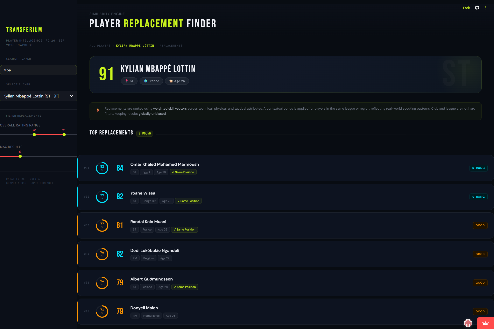

Transferium Player Intelligence
A replacement finder that surfaces true player similarity.

The Problem
Most player-replacement tools rely on rigid filters (same position, same league, similar age, etc.), which can exclude genuinely comparable players sitting just outside those boundaries, and are usually too slow or manual for real ad-hoc exploration. The goal was a fast, statistically grounded replacement finder that surfaces true similarity rather than just filter-matching, and returns results instantly.
"Statistically grounded" had to mean something more specific than "similar attributes," though — a 65-rated player and a 91-rated player can share a similar attribute shape (both pacey wingers with weak aerial ability, say) while being nowhere close to viable replacements for each other. That gap between attribute similarity and genuine replacement viability is what most of the design decisions below were built to close.
The Approach
Player data is modelled as a graph in Neo4j, with similarity edges pre-computed using a weighted cosine similarity engine. Separate models were built for goalkeepers and outfield players, since the two roles don't share a meaningful attribute space.
Two extra safeguards sit on top of the raw similarity score. An overall-rating penalty pulls down matches that are attribute-similar but meaningfully weaker or stronger overall, which is what stops the 65-vs-91 problem above from ever surfacing a nonsensical "replacement." Position-overlap filtering does a related job from a different angle, keeping suggestions within a realistic tactical range of the original player's role rather than surfacing a statistically similar player who plays an entirely different position on the pitch.
The weighting splits 90/10 between raw skill attributes and contextual factors like league and region. Because the similarity graph is pre-computed rather than calculated on the fly, a query at run time is a single graph traversal, not a live recomputation, letting the Streamlit front-end return results instantly.
Worked Example
Searching Kylian Mbappé Lottin (91 OVR, ST) returns eight ranked replacements with explicit match-strength labels:
- - Omar Khaled Mohamed Marmoush (84 OVR, ST) - 82% Similarity
- - Yoane Wissa (82 OVR, ST) - 79% Similarity
- - Randal Kolo Muani (81 OVR, ST) - 77% Similarity
- - Dodi Lukébakio Ngandoli (82 OVR, RM) - 76% Similarity
- - Albert Guðmundsson (79 OVR, ST) - 74% Similarity
- - Donyell Malen (79 OVR, RM) - 71% Similarity
- - Sepe Elye Wahi (75 OVR, ST) - 68% Similarity
- - Vítor Manuel Carvalho Oliveira (75 OVR, ST) - 68% Similarity
The Outcome
Critically, the tool doesn't hard-filter by position. It also surfaces genuinely useful off-position options, like Dodi Lukébakio and Donyell Malen — both right midfielders — ranked on real similarity rather than excluded outright, the kind of cross-positional find a rigid scouting filter would never return.
A full write-up exists in the essays section.